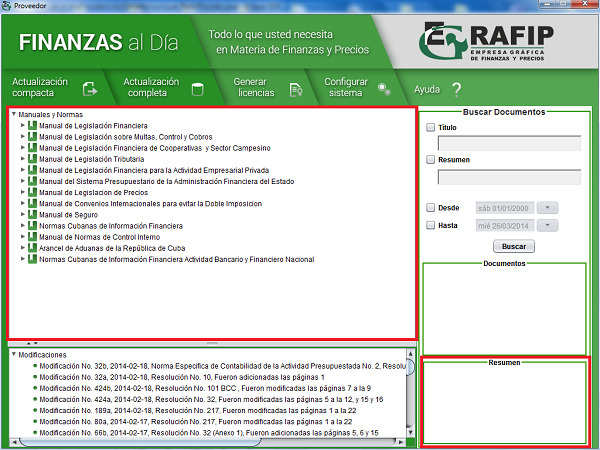

Panel de Manuales y Normas
El panel "Manuales y Normas" contiene la relación de todos los manuales del cuerpo legal que se distribuyen en esta aplicación. Toda la información está recogida en forma de árbol, lo cuál hace más fácil la localización de una disposición en particular. En el panel "Resumen" se muestra una descripción general de la disposición seleccionada, para facilitar el reconocimiento de la misma.
Para acceder a la documentación deseada se debe dar doble click sobre el documento que se desea visualizar y este se mostrará en formato PDF, por lo que debe tener instalado previamente en su ordenador algún lector de dicho formato.
